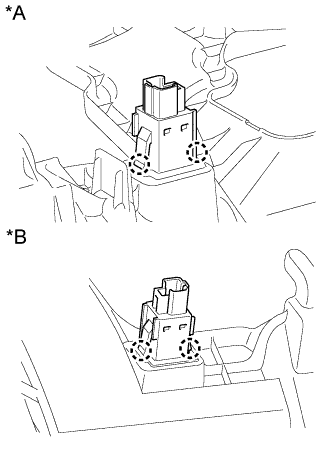

ВЫКЛЮЧАТЕЛЬ ОТМЕНЫ ПРЕДАВАРИЙНОГО ВКЛЮЧЕНИЯ ТОРМОЗОВ > СНЯТИЕ |
| 1. СНИМИТЕ НИЖНЮЮ КРЫШКУ ПАНЕЛИ ПРИБОРОВ № 1 В СБОРЕ (для моделей с левосторонним рулевым управлением) |
 |
Для моделей с левосторонним рулевым управлением:
Выверните винт.
Освободите 2 фиксатора и 2 направляющих и снимите нижнюю крышку панели приборов № 1.
 |
Для моделей с правосторонним рулевым управлением:
Выверните винт.
Освободите 3 фиксатора и 2 направляющих и снимите нижнюю крышку панели приборов № 1.
| 2. СНИМИТЕ НИЖНЮЮ КРЫШКУ ПАНЕЛИ ПРИБОРОВ № 2 В СБОРЕ (для моделей с правосторонним рулевым управлением) |
Выверните винт.
Освободите 3 фиксатора и 2 направляющих и снимите нижнюю крышку панели приборов № 2.

| *A | Для моделей с левосторонним рулевым управлением | *B | Для моделей с правосторонним рулевым управлением |
| 3. СНИМИТЕ ВЫКЛЮЧАТЕЛЬ ОТМЕНЫ ПРЕДАВАРИЙНОГО ВКЛЮЧЕНИЯ ТОРМОЗОВ В СБОРЕ |
|  |
Открепите 2 захвата и снимите выключатель отмены предаварийного включения тормозов.
| *A | Для моделей с левосторонним рулевым управлением |
| *B | Для моделей с правосторонним рулевым управлением |